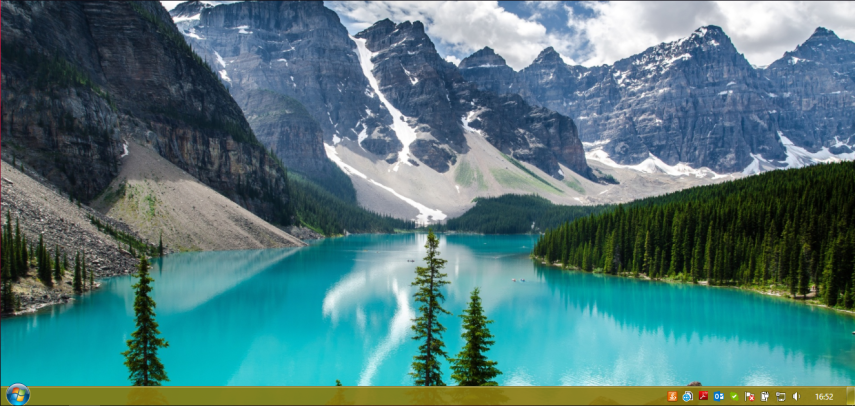
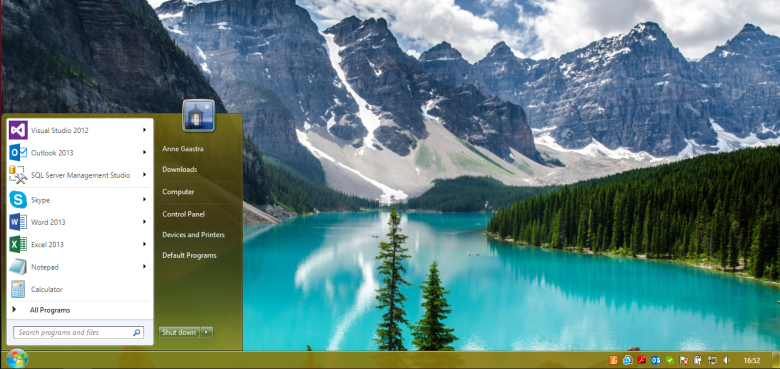
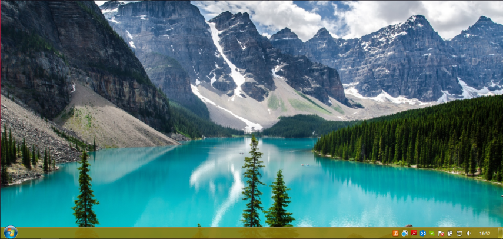
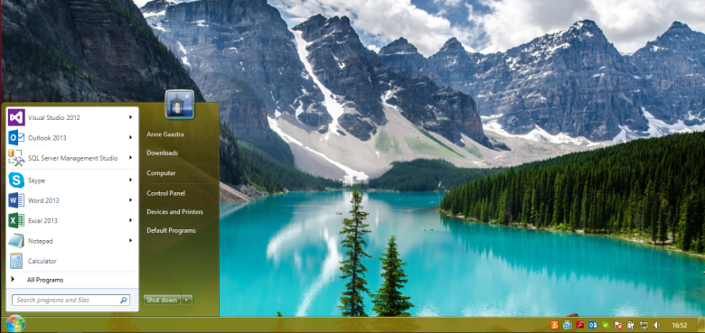

Windows 7
Windows 7 é uma versão do Microsoft Windows, uma série de sistemas operativos produzidos pela Microsoft para uso em computadores pessoais, incluindo computadores domésticos e empresariais, laptops, tablets e PCs de centros de mídia, entre outros. Windows 7 foi lançado para empresas no dia 22 de julho de 2009, e começou a ser vendido livremente para usuários comuns às 00h00 do dia 22 de outubro de 2009, menos de três anos depois do lançamento de seu predecessor, Windows Vista. Pouco mais de três anos depois, o seu sucessor, Windows 8, foi lançado em 26 de outubro de 2012.
Diferente do Windows Vista, que introduziu um grande número de recursos novos (principalmente com a introdução da nova interface Windows Aero), o Windows 7 foi uma atualização mais modesta e focada para ser mais eficiente, limpa e mais prática de usar, com a intenção de torná-lo totalmente compatível com aplicações e hardwares com os quais o Windows Vista já era compatível. Apresentações dadas pela companhia no começo de 2008 mostraram um "Shell" novo, com uma barra de tarefas mais larga e que agora mostra ícones dos programas como atalhos, um novo Menu Iniciar que expande lateralmente mostrando os arquivos que já foram abertos pelo programa, um sistema de "network" chamada de "HomeGroup", e aumento na performance ao abrir programas e ao inicializar o Windows e uma nova tela de boot. Algumas aplicações que foram incluídas em lançamentos anteriores do Windows, como o Calendário do Windows, Windows Mail, Windows Movie Maker e Windows Photo Gallery não serão incluídos no Windows 7 — estes são oferecidos separadamente como parte gratuita do Windows Essentials, para download gratuito.
O Windows 7 recebeu diversos elogios da crítica, com vários os críticos considerando o sistema como uma grande melhoria em relação ao seu antecessor, o Windows Vista, principalmente por causa de seu desempenho melhorado, sua interface mais intuitiva (com elogios dedicados à nova barra de tarefas), redução pop-ups relacionados ao Controle de Conta de Usuário e outras melhorias gerais da plataforma. O Windows 7 foi um grande sucesso para a Microsoft; em apenas seis meses, mais de 100 milhões de cópias foram vendidas em todo o mundo, esse número aumentando para mais de 630 milhões de licenças até julho de 2012. Em 1.º de fevereiro de 2018, o Windows 7 perdeu o posto de sistema operacional mais popular para o Windows 10, a versão mais recente do sistema, que havia sido lançada em 29 de julho de 2015.[5] Em 10 de setembro de 2018, a Microsoft lançou a público a notícia que entre 2020 e 2023, vão ser distribuídas Atualizações Estendidas de Segurança (ESU) para todos os clientes do Windows 7 nas versões Professional e Enterprise no Licenciamento por Volume. Dessa forma, as empresas terão um pouco mais de tempo de migrar para outro sistema operacional. A Microsoft irá cobrar por dispositivo, e o preço ficará mais alto a cada ano.
Origem do Nome
O seu nome surgiu do fato de ser a sétima versão estável do Microsoft Windows, sendo o Windows 1.x a primeira, Windows 2.x a segunda, Windows 3.x a terceira, Windows 95/98/ME/NT a quarta, Windows 2000/XP a quinta e Windows Vista a sexta.[7] O nome de código seguiu a tradição da Microsoft durante anos, colocando nome de cidades em seus produtos. Ao longo das décadas de 1980 e 1990, várias versões dos seus sistemas operacionais tiveram nomes de cidades, como o Sparta, uma referência a cidade-estado grega Esparta (Windows for Workgroups 3.11), Daytona (Windows NT 3.5), Cairo (Windows NT 4.0), Windows NT 5.0 (Windows 2000), Chicago (Windows 95), Memphis (Windows 98) e em 2009 retomando a tradição, Vienna (Windows 7).
Compatibilidade
A Microsoft afirmou que o Windows 7 terá plena compatibilidade com drivers e aplicações.[16] Portanto, não se reproduzirão as incompatibilidades e problemas que aconteceram ao se usarem programas que funcionavam com perfeição no Windows XP e não funcionaram no Windows Vista.
Em 24 de Abril de 2009, a Microsoft revelou que o Windows 7 (versões Professional, Enterprise e Ultimate apenas) iria ter o Windows XP "embutido", na forma de um modo virtual, similar ao ambiente Classic, do Mac OS X, disponível como download separado.
Requisitos Mínimos de Sistema
Processador 1GHz
1 GB de memória
DirectX 9 com 128 MB de memória gráfica
16 GB de armazenamento
Leitores de DVD-ROM ou entrada USB
Limites de Memória Física
Windows 7 Starter : 2 GB
Windows 7 X86 (qualquer versão) : 4 GB
Windows 7 Home Basic X64 : 8 GB
Windows 7 Home Premium X64 : 16 GB
Windows 7 Proffesional / Enterprise / Ultimate X64 : 192 GB
Linha do Tempo
Windows 7 Beta
No dia 9 de Janeiro de 2009, foi liberada a versão oficial para download do beta 1 do Windows 7. A build seria a mesma que teria vazado em sites torrent alguns dias antes (6.1.7000.0.081212-1400). Minutos depois, todos os servidores Microsoft estavam lotados.
A Microsoft divulgou a informação de que o Windows 7 Beta deveria expirar em 1.º de junho de 2009. Essa informação na verdade era incorreta e fez com que a empresa divulgasse uma nova informação enviando ao colaboradores da versão de teste que cometeram um erro ("We made a mistake"). A versão beta já tinha começado a desligar a cada duas horas no dia 1.º de maio de 2010 (informação oficial)
Windows 7 Release Candidate
Dia 5 de março foi liberado o Windows 7 Release Candidate build 7100, e expirou no dia 1 de junho de 2009, reiniciando o computador de duas em duas horas, e com a tela da Área de Trabalho na cor preta.
Windows 7 RTM
A última compilação do Windows 7 foi feita e registra a Build 7600. A versão RTM do sistema tem a seguinte string: 7600.16385.win7_rtm.090713-1255. Isto significa que a última versão foi compilada dia 13 de julho de 2009 às 12:55. O sistema está totalmente estável na maioria dos cenários e livre de bugs conhecidos. Como prometido pela empresa, no dia 13 de julho, ela apresentaria aos parceiros e ao mundo a versão final do sistema que acabou vazando antes. Sua versão comercial já está disponível para comercialização desde 22 de Outubro de 2009.[18] Após alguns meses no mercado, o Windows 7 fez um grande sucesso, deixando uma marca histórica para a Microsoft. O Windows 7 é considerado seguro, fácil de usar, rápido em executar tarefas e músicas, etc. O Windows 7 é conhecido em suas versões: Starter, Home Basic, Home Premium, Professional, Enterprise e Ultimate.
Imagens
 Logo do Windows 7

Área de trabalho do Windows 7

Menu Iniciar do Windows 7
Logo do Windows 7

Área de trabalho do Windows 7

Menu Iniciar do Windows 7